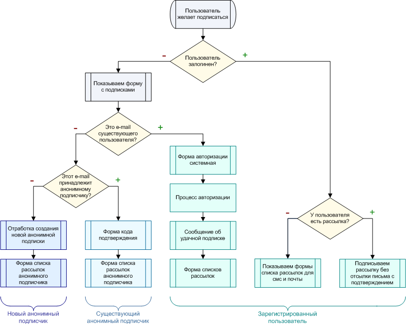

Логика и особенности работы
Обратно к содержанию
Для удобства пользователя, компонент ведет себя по-разному при различных условиях.
Возможно несколько вариантов работы подписки:
- пользователь залогинен;
- пользователь не залогинен, но в банке пользователей он уже присутствует (определяется по адресу электронной почты или телефонному номеру);
- пользователь анонимен, но уже подписан на какую-то рассылку (определяется по адресу электронной почты или телефонному номеру);
- пользователь анонимен и еще не подписан ни на одну из рассылок.
Схема алгоритма логики работы компонента

Особенности работы компонента
- Используется единый банк данных для хранения почтовых и SMS подписок. Подписка на SMS номер определяется по специальному постфиксу – @phone.sms.
Т.е. если пользователь хочет оформить SMS подписку на номер 7615333121, то в системе он будет храниться как 7615333121@phone.sms;
- Адреса электронной почты хранятся без каких либо изменений;
- Зарегистрированный пользователь имеет возможность создавать подписки без запроса кода подтверждения, но имеет право создавать подписки на адрес, указанный в личных данных. Т.е. для почтовой подписки это поле EMAIL, для SMS подписки это PERSONAL_MOBILE;
- При регистрации SMS-рассылки зарегистрированным пользователем и отсутствии в личных данных номера телефона, телефон указанный при регистрации новой SMS рассылки добавится в личные данные пользователя (поле PERSONAL_MOBILE);
- Система различает почтовую рассылку от SMS рассылки посредству сканирования названия и описания рассылки на наличие сочетания букв "SMS";
- При рассылке SMS-выпуска, рассылка будет осуществляться только на адреса типа *@phone.sms. При рассылке почтового выпуска такие адреса (*@phone.sms), наоборот, будут игнорироваться;
- Если для SMS-выпуска указан формат HTML то рассылка производиться не будет. SMS-рассылки могут быть только в текстовом формате;
- Анонимный подписчик имеет возможность отписаться от рассылки только по ссылке из письма.